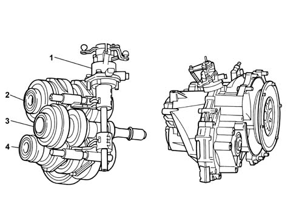
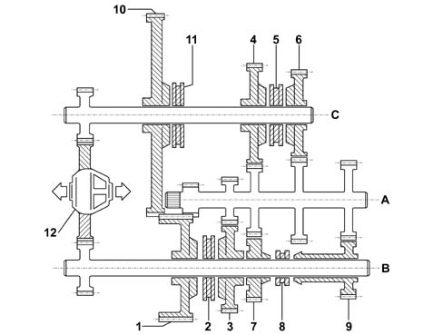
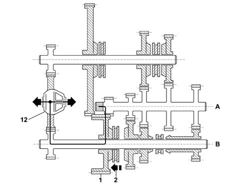
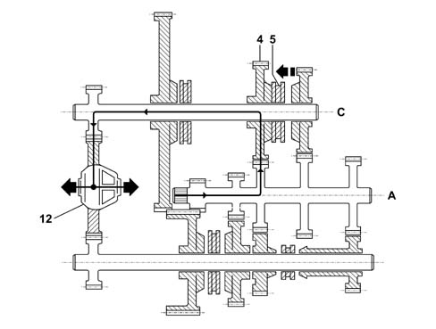
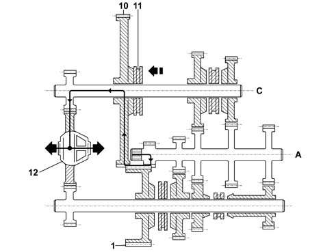

F40 GEARBOX
- Path
- Descriptions > 21 GEARBOX > F40 GEARBOX
- Kind
- system description
- Applies to
- engines: 2.4 JTD 20V; all production periods
- Interactive page
- https://sloeber94.github.io/elrnDB-lThss/en/#/810701
Applies to: engines: 2.4 JTD 20V; all production periods
CO-AXIAL HYDRAULIC OPERATION (CSC)
The (CSC) operating system comprises an actuating cylinder located on the bellhousing which controls the clutch, working co-axially in relation to the main shaft.

- 1. Air bleed plug
- 2. Oil pressure inlet
- 3. Co-axial hydraulic operation assembly
F40 GEARBOX
The diagrams show the F40 gearbox assembly with three propeller shafts.

- 1. Gear engagement assembly
- 2. Layshaft C
- 3. Main shaft A
- 4. Main shaft B
The configuration of the gearbox is transverse with three shafts: one main shaft (A) and two layshafts (B and C).
The main shaft A contains five fixed gears designed to transmit power to the gears for 1st, 2nd, 3rd, 4th, 5th 6th and Reverse speeds on the two layshafts B and C which they mesh with constantly.
The two layshafts B and C both have a pinion which meshes constantly with the differential ring gear.
The layshaft B contains the 1st and 2nd speed and the 5th and 6th speed gear trains, whilst the layshaft C contains the 3rd and 4th speed and the reverse gear trains.
The components inside the gearbox are lubricated dynamically, by means of the oil flowing through the ducts in the casings and the ports in the shafts as well as additional plastic ducts; all of this allows improved torque transmission and better protection against wear.
The clutch is hydraulically operated with the C.S.C. system co-axial on the main shaft inside the gearbox.
This system produces the following advantages:
- recovery of the clutch plate wear which allows the load on the clutch pedal to remain constant throughout the life of the vehicle
- improved acoustic comfort
- reduction of the engagement force
- no vibrations / shuddering of the lever
Gearbox in neutral position
The diagram below shows the position of the gearbox when no gear is engaged.

- 1. 1st speed gear
- 2. 1st and 2nd speed synchronizer
- 3. 2nd speed gear
- 4. 3rd speed gear
- 5. 3rd and 4th speed synchronizer
- 6. 4th speed gear
- 7. 5th speed gear
- 8. 5th and 6th speed synchronizer
- 9. 6th speed gear
- 10. reverse gear
- 11. Reverse synchronizer
- 12. Differential
- A. Main shaft
- B. Layshaft
- C. Layshaft
TRANSMISSION OF POWER IN THE VARIOUS GEARS
First speed
The power enters the gearbox via the mainshaft A and is transmitted, through the fixed drive gear, to the driven gear for 1st speed on the layshaft B.
When 1st speed is engaged, the synchronizer 2 joins the driven gear 1 with the layshaft B and the power is transmitted to the differential 12 thereby completing the kinematic chain.

- A. Main shaft
- B. Layshaft
- 1. 1st speed gear
- 2. Synchronizer
- 12. Differential
Second speed
The power enters the gearbox via the mainshaft A and is transmitted, through the fixed drive gear, to the driven gear 3 for the 2nd speed on the layshaft B.
When 2nd speed is engaged, the synchronizer 2 joins the driven gear 3 with the layshaft B and the power is transmitted to the differential 12 thereby completing the kinematic chain.

- A. Main shaft
- B. Layshaft
- 2. Synchronizer
- 3. 2nd speed gear
- 12. Differential
Third speed
The power enters the gearbox via the mainshaft A and is transmitted, through the fixed drive gear, to the driven gear 4 for 3rd speed on the layshaft C.
When 3rd speed is engaged, the synchronizer 5 joins the driven gear 4 with the layshaft C and the power is transmitted to the differential 12 thereby completing the kinematic chain.

- A. Main shaft
- C. Layshaft
- 4. 3rd speed gear
- 5. Synchronizer
- 12. Differential
Fourth speed
The power enters the gearbox via the mainshaft A and is transmitted, through the fixed drive gear, to the driven gear 6 for 4th speed on the layshaft C.
When 4th speed is engaged, the synchronizer 5 joins the driven gear 6 with the layshaft C and the power is transmitted to the differential 12 thereby completing the kinematic chain.

- A. Main shaft
- C. Layshaft
- 5. Synchronizer
- 6. 4th speed gear
- 12. Differential
Fifth speed
The power enters the gearbox via the mainshaft A and is transmitted, through the fixed drive gear, to the driven gear 7 for 5th speed on the layshaft B.
When 5th speed is engaged, the synchronizer 8 joins the driven gear 7 with the layshaft B and the power is transmitted to the differential 12 thereby completing the kinematic chain.

- A. Main shaft
- B. Layshaft
- 7. 5th speed gear
- 8. Synchronizer
- 12. Differential
Sixth speed
The power enters the gearbox via the mainshaft A and is transmitted, through the fixed drive gear, to the driven gear 9 for 6th speed on the layshaft B.
When 6th speed is engaged, the synchronizer 8 joins the driven gear 9 with the layshaft B and the power is transmitted to the differential 12 thereby completing the kinematic chain.

- A. Main shaft
- B. Layshaft
- 8. Synchronizer
- 9. 6th speed gear
- 12. Differential
Reverse gear
The power enters the gearbox via the main shaft A through the drive gear 1 for the 1st speed on the layshaft B.
This gear remains free on its shaft and only works as an idler for the power between the main shaft A and the driven gear 10 for reverse on the layshaft C.
When reverse is engaged, the synchronizer 11 joins the reverse gear 10 with the layshaft C and the power is transmitted to the differential 12 thereby completing the kinematic chain.

- A. Main shaft
- C. Layshaft
- 1. 1st speed gear (neutral on the shaft)
- 10. Reverse gear
- 11. Reverse synchronizer
- 12. Differential